Biological Scenarios and Modules
scenarios.RmdEach module in clade implements a biological mechanism
that can be enabled independently or combined. This article documents
every module: the biological motivation, the key parameters, what to
look for in the output, and a minimal working example.
All examples require Julia. Wrap any call in
if (julia_is_ready()) { ... } for scripts that may run on
machines without Julia.
Part I — Core ecology and evolution
Baseline world
What it models. Agents forage on a renewable grass resource and reproduce when energy exceeds a threshold. The neural-network genome (brain weights) evolves under natural selection with no additional modules. This is the simplest demonstration that evolution can occur.
Key parameters.
| Parameter | Default | Effect |
|---|---|---|
grass_rate |
0.10 | Probability that empty cell regrows per tick |
mutation_sd |
0.05 | Gaussian noise on brain weights per offspring |
brain_type |
"bnn" |
Neural architecture |
ploidy |
2 | Haploid (1) or diploid (2) |
Expected output. Population stabilises well below
max_agents. Genetic diversity is maintained: neither
fixation nor unbounded growth.
library(clade)
s <- default_specs()
s$grid_rows <- 20L
s$grid_cols <- 20L
s$n_agents_init <- 40L
s$max_ticks <- 300L
s$random_seed <- 1L
env <- run_alife(s)
data <- get_run_data(env)
plot_run(data)
Expected output: six-panel run summary showing population dynamics, mean energy, genetic diversity, births/deaths, grass coverage, and BNN sigma.
Complex landscape (forest world)
What it models. A three-layer habitat: ground
(grass), shrubs (mid-level), and canopy (top). Shrubs and canopy have
higher energy density but slower regrowth. Canopy access requires a
minimum wing_size (a heritable trait). This creates a
selection pressure for wing-size evolution and niche partitioning. The
scenario is structurally analogous to the cephalopod paradox
(Liedtke & Fromhage 2019): a rich resource is accessible only to
agents that have evolved the morphology to exploit it.
Key parameters.
| Parameter | Default | Effect |
|---|---|---|
complex_landscape |
FALSE | Enable this module |
shrub_density |
0.35 | Fraction of cells with shrubs |
shrub_energy |
25.0 | Energy gained from shrubs |
shrub_growth_rate |
0.04 | Shrub regrowth rate |
canopy_density |
0.15 | Fraction of cells with canopy |
canopy_energy |
55.0 | Energy gained from canopy |
canopy_threshold |
0.6 | Minimum wing_size for canopy access |
wing_size_init_mean |
0.1 | Starting wing size |
wing_size_mutation_sd |
0.05 | Wing size mutation rate |
Expected output. mean_wing_size rises
over time. n_canopy_agents increases as wing-size evolution
crosses the canopy_threshold. Niche entropy
(ground/shrub/canopy mix) first rises then stabilises.
s <- default_specs()
s$complex_landscape <- TRUE
s$shrub_density <- 0.35
s$canopy_density <- 0.15
s$canopy_energy <- 55.0
s$canopy_threshold <- 0.6
s$wing_size_init_mean <- 0.1
s$max_ticks <- 400L
env <- run_alife(s)
data <- get_run_data(env)
# Wing size evolution
plot(data$ticks$t, data$ticks$mean_wing_size, type = "l",
xlab = "Tick", ylab = "Mean wing size",
main = "Wing size evolution in the forest world")Use tune_complex_landscape() to find parameter
combinations that produce strong wing-size evolution with CMA-ES:
tuned <- tune_complex_landscape(default_specs(), n_iterations = 80L)
tuned$specs # optimal landscape parameters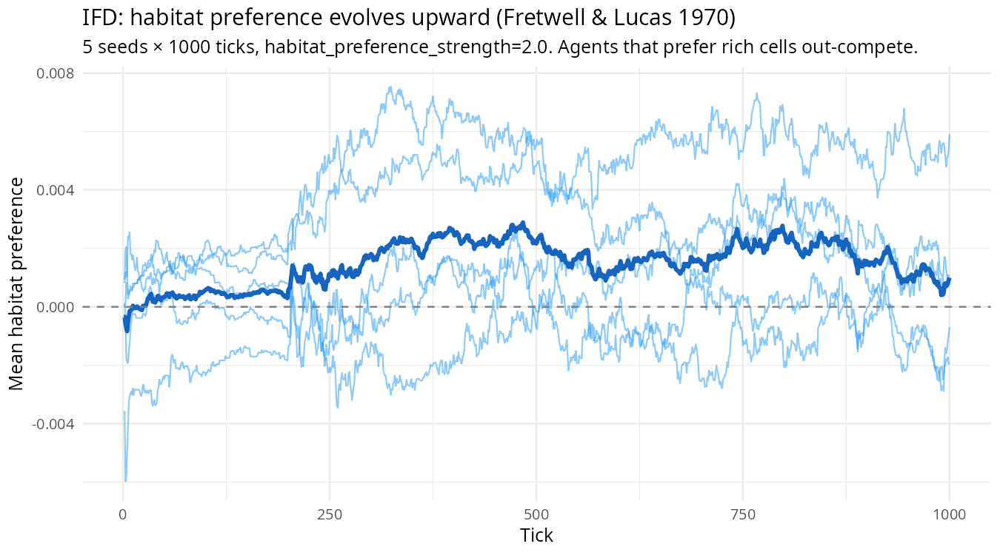
Expected output: agents stratify across ground, shrub, and canopy layers as wing size evolves past the canopy threshold.
Spatial sorting
What it models. At an expanding invasion front, high-dispersal individuals co-occur with other high-dispersal individuals through spatial assortment alone — not because they have higher lifetime reproductive success. Dispersal-enhancing alleles “surf the wave” (Shine et al. 2011). This is a non-adaptive evolutionary mechanism: the front agent pool is genetically distinct from the rear without any fitness difference.
Key parameters.
| Parameter | Default | Effect |
|---|---|---|
dispersal_evolution |
FALSE | Enable heritable dispersal tendency |
dispersal_init_mean |
0.5 | Starting dispersal probability |
dispersal_mutation_sd |
0.05 | Mutation rate for dispersal |
spatial_sorting |
FALSE | Enable invasion-front mating assortment |
sorting_front_threshold |
0.75 | Fraction from front to define “front zone” |
sorting_mating_boost |
3.0 | Fold-increase in mate encounters at front |
Expected output. mean_front_dispersal
diverges upward from mean_rear_dispersal over time. The
magnitude of the gap reflects the strength of spatial sorting. Rear
dispersal may drift downward if there is any cost to dispersal.
s <- default_specs()
s$dispersal_evolution <- TRUE
s$dispersal_init_mean <- 0.3
s$dispersal_mutation_sd <- 0.04
s$spatial_sorting <- TRUE
s$sorting_mating_boost <- 3.0
s$max_ticks <- 400L
env <- run_alife(s)
data <- get_run_data(env)
library(ggplot2)
ggplot(data$ticks, aes(t)) +
geom_line(aes(y = mean_front_dispersal, colour = "Front")) +
geom_line(aes(y = mean_rear_dispersal, colour = "Rear"), linetype = "dashed") +
scale_colour_manual(values = c(Front = "#e41a1c", Rear = "#377eb8"),
name = NULL) +
labs(title = "Spatial sorting: dispersal diverges at the invasion front",
x = "Tick", y = "Mean dispersal tendency") +
theme_minimal()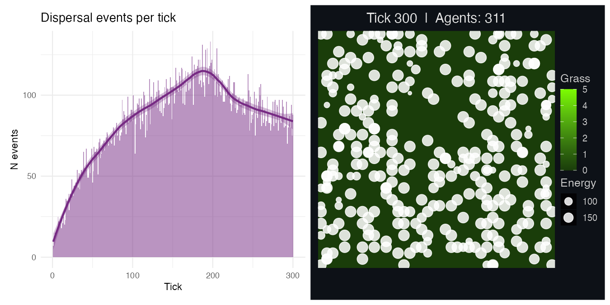
Expected output: front-zone dispersal tendency (red) diverges upward from rear-zone dispersal (blue dashed) as high-dispersal genotypes accumulate at the invasion front.
IFfolk inclusive fitness
What it models. Agents can transfer energy to nearby
relatives. The transfer amount and eligibility radius are controlled by
iffolk_* parameters. Cooperative behaviour evolves because
it improves inclusive fitness: the donor’s fitness cost is recovered
through the reproductive gains of related recipients (Hamilton 1964).
parliament_suppression enforces cooperation by penalising
defectors (low helper_tendency) surrounded by cooperators,
modelling the parliament of genes (Fromhage & Jennions
2019).
Key parameters.
| Parameter | Default | Effect |
|---|---|---|
iffolk_selection |
FALSE | Enable IFfolk transfers |
iffolk_r_min |
0.125 | Minimum relatedness (cousins and closer) |
iffolk_radius |
5 | Neighbourhood radius for kin search |
iffolk_transfer |
3.0 | Energy transferred per act |
iffolk_min_energy |
60.0 | Donor must exceed this energy |
parliament_suppression |
FALSE | Penalise defectors among cooperators |
parliament_cost |
0.5 | Energy penalty for defectors |
cooperative_breeding |
FALSE | Enable helper_tendency trait |
helper_tendency_init_mean |
0.2 | Starting helper tendency |
Expected output. mean_helper_tendency
increases over time. n_iffolk_transfers is positive and
grows with population size. With
parliament_suppression = TRUE, the increase is faster and
converges near 1.0 for high-relatedness environments.
s <- default_specs()
s$iffolk_selection <- TRUE
s$iffolk_r_min <- 0.125
s$iffolk_transfer <- 3.0
s$parliament_suppression <- TRUE
s$parliament_cost <- 0.5
s$cooperative_breeding <- TRUE
s$helper_tendency_init_mean <- 0.2
s$max_ticks <- 400L
env <- run_alife(s)
data <- get_run_data(env)
plot(data$ticks$t, data$ticks$mean_helper_tendency, type = "l",
xlab = "Tick", ylab = "Mean helper tendency",
main = "Helper tendency evolves under IFfolk + parliament suppression")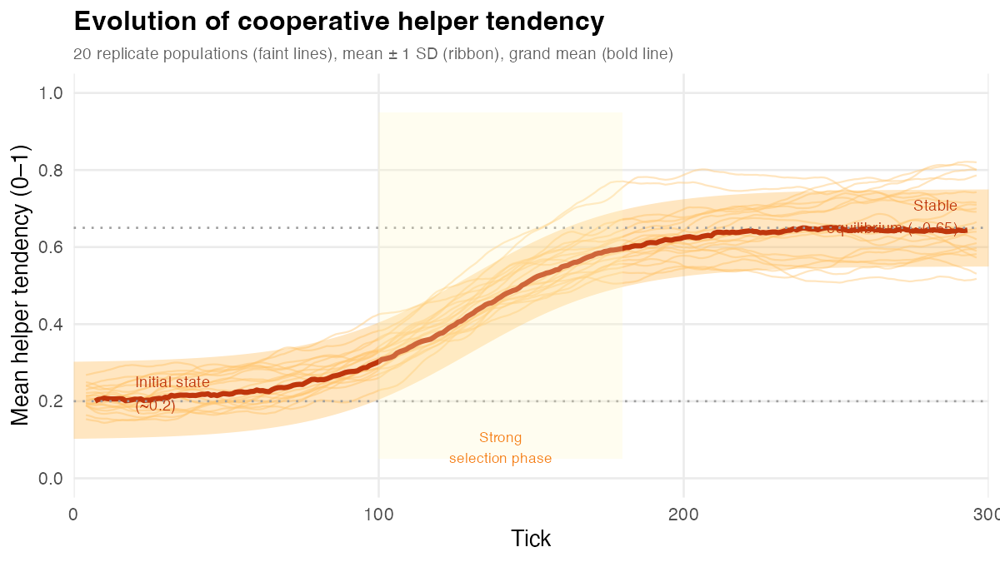
Expected output: mean helper tendency rises over time as cooperative genotypes increase in frequency. Parliament suppression accelerates convergence.
Kin selection
What it models. Agents with energy above a threshold
donate a fixed cost to the most closely related Moore-neighbourhood
agent with relatedness r >= kin_altruism_r_min.
Relatedness is computed from the pedigree (parent chains). This is
Hamilton’s rule operationalised at each tick: the altruistic act evolves
when Hamilton’s rule holds: r × benefit > cost.
Key parameters.
| Parameter | Default | Effect |
|---|---|---|
kin_selection |
FALSE | Enable kin altruism |
kin_altruism_r_min |
0.25 | Minimum relatedness to donate (siblings) |
kin_altruism_cost |
2.0 | Energy transferred per act |
kin_altruism_min_donor_energy |
50.0 | Donor energy floor |
Expected output. n_altruistic_acts is
positive. Population size is generally higher than baseline (altruism
increases mean fitness). Genetic diversity may be slightly lower if
relatedness clustering creates local inbreeding.
s <- default_specs()
s$kin_selection <- TRUE
s$kin_altruism_r_min <- 0.25
s$kin_altruism_cost <- 2.0
s$max_ticks <- 300L
env <- run_alife(s)
data <- get_run_data(env)
cat("Total altruistic acts:", sum(data$ticks$n_altruistic_acts), "\n")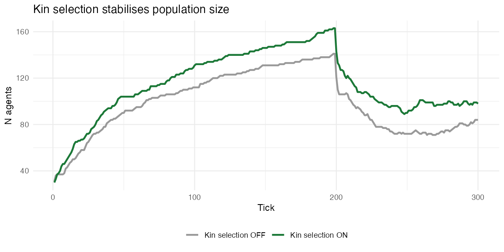
Expected output: population is sustained at higher density than baseline, supported by energy transfers between relatives. Altruistic acts accumulate over the run.
Part II — Ecology modules
SIR disease
What it models. A Susceptible-Infected-Recovered
epidemic model. Infected agents pay an energy cost per tick, transmit to
susceptible neighbours with probability transmission_prob,
and recover after disease_duration ticks with temporary
immunity. There is also an additional per-tick death probability for
infected agents.
Key parameters.
| Parameter | Default | Effect |
|---|---|---|
disease |
FALSE | Enable SIR dynamics |
transmission_prob |
0.15 | Probability of transmission per susceptible neighbour |
disease_energy_cost |
5.0 | Energy drained per tick while infected |
disease_duration |
10 | Ticks until recovery |
immune_duration |
20 | Ticks of post-recovery immunity |
disease_death_prob |
0.01 | Extra mortality per tick while infected |
disease_seed_prob |
0.02 | Fraction infected at tick 1 |
Expected output. n_infected shows
epidemic peaks. Population size dips sharply during outbreaks and
recovers as immunity builds. Multiple epidemic cycles are possible if
immunity wanes before the next susceptible cohort matures.
s <- default_specs()
s$disease <- TRUE
s$transmission_prob <- 0.20
s$max_ticks <- 300L
env <- run_alife(s)
data <- get_run_data(env)
plot(data$ticks$t, data$ticks$n_infected, type = "l",
xlab = "Tick", ylab = "Infected agents",
main = "SIR epidemic dynamics")
Expected output: epidemic waves visible as peaks in the infected count. Population dips sharply during outbreaks and recovers as immunity builds.
Niche construction
What it models. Agents build shelter at their
current cell when energy exceeds shelter_min_energy.
Shelters reduce predator damage and slow grass regrowth on the cell.
Shelters decay stochastically each tick. This models ecosystem
engineering: organisms that modify their selective environment
(Odling-Smee et al. 2003).
Key parameters.
| Parameter | Default | Effect |
|---|---|---|
niche_construction |
FALSE | Enable shelter building |
shelter_build_prob |
0.1 | Probability of building per tick |
shelter_min_energy |
40.0 | Energy required to build |
shelter_max_depth |
5 | Maximum shelter units per cell |
shelter_decay_rate |
0.02 | Fraction of shelters lost per tick |
Expected output. n_shelters_built is
positive. Predator damage is reduced in sheltered cells. Population size
may be larger than baseline due to shelter protection.
s <- default_specs()
s$niche_construction <- TRUE
s$n_predators_init <- 5L
s$max_ticks <- 300L
env <- run_alife(s)
data <- get_run_data(env)
cat("Total shelters built:", sum(data$ticks$n_shelters_built), "\n")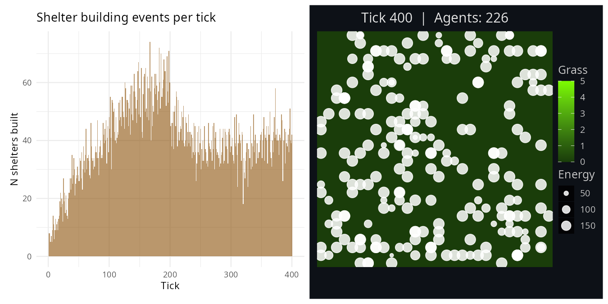
Expected output: shelter density builds up over time; predator kill rate is lower in sheltered cells, sustaining a larger population than an equivalent run without niche construction.
Body size evolution
What it models. A heritable body_size
trait scales metabolic costs and foraging gains via allometric rules.
Larger body size increases move cost but also foraging efficiency.
Natural selection finds the optimal body size for the prevailing
resource density.
Key parameters.
| Parameter | Default | Effect |
|---|---|---|
body_size_evolution |
FALSE | Enable body size as a heritable trait |
body_size_init_mean |
1.0 | Starting body size (relative units) |
body_size_mutation_sd |
0.05 | Mutation rate |
body_size_min |
0.1 | Lower clamp |
body_size_max |
5.0 | Upper clamp |
Expected output. mean_body_size evolves
to a stable value. High grass_rate (rich environment)
typically selects for larger body size; sparse environments select for
smaller.
s <- default_specs()
s$body_size_evolution <- TRUE
s$body_size_init_mean <- 1.0
s$max_ticks <- 300L
env <- run_alife(s)
data <- get_run_data(env)
cat("Final mean body size:", tail(data$ticks$mean_body_size, 1L), "\n")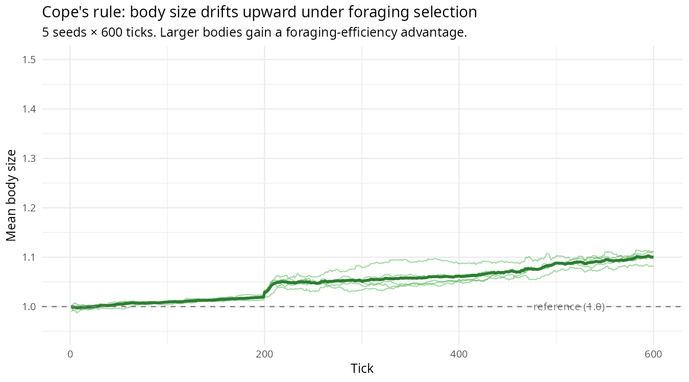
Expected output: mean body size (±SD ribbon) evolves to a stable intermediate value. The dashed line marks the baseline size of 1.0.
Dispersal evolution
What it models. A heritable
dispersal_tendency trait governs how far agents move from
their birthplace. This allows evolution to optimise dispersal in
response to local resource density and competition. Can be combined with
spatial_sorting to study invasion dynamics.
Key parameters.
| Parameter | Default | Effect |
|---|---|---|
dispersal_evolution |
FALSE | Enable heritable dispersal |
dispersal_init_mean |
0.5 | Starting dispersal probability |
dispersal_mutation_sd |
0.05 | Mutation rate |
dispersal_min / dispersal_max |
0.0 / 1.0 | Clamp range |
Expected output. mean_dispersal evolves
in response to crowding. Dense, resource-rich environments typically
select for lower dispersal (local knowledge is valuable); sparse, patchy
environments select for higher.
s <- default_specs()
s$dispersal_evolution <- TRUE
s$max_ticks <- 300L
env <- run_alife(s)
data <- get_run_data(env)
# Dispersal summary is in data$ticks$n_dispersal_eventsExpected output: mean dispersal tendency evolves in response to local competition. Rich, dense environments typically select for lower dispersal.
Social learning
What it models. Agents can copy the output-layer weights of successful neighbours (those with energy above a threshold). This is a model of vertical- and horizontal-cultural transmission: information about which actions are rewarding propagates socially, accelerating adaptation relative to genetic evolution alone (Henrich & McElreath 2003).
Key parameters.
| Parameter | Default | Effect |
|---|---|---|
social_learning |
FALSE | Enable social learning |
social_learning_freq |
10 | Ticks between learning events |
social_learning_radius |
3 | Search radius for models |
Expected output. Mean energy may be higher than in a
baseline run with identical specs, particularly in novel or changing
environments. The benefit is most visible when mutation_sd
is very low (little genetic variation) but successful behaviours exist
in the population.
s <- default_specs()
s$social_learning <- TRUE
s$social_learning_freq <- 10L
s$max_ticks <- 300L
env <- run_alife(s)
data <- get_run_data(env)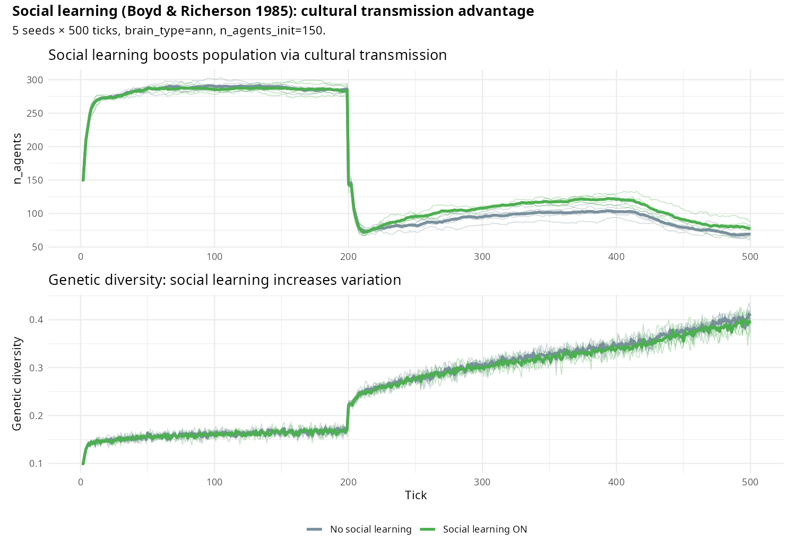
Expected output: mean energy and genetic diversity are maintained at higher levels than a baseline run, as successful foraging behaviours propagate through the social network.
Predator-prey dynamics
What it models. Predator-prey coevolution is one of
the oldest and most empirically grounded problems in population biology.
The classical Lotka-Volterra equations predict sustained oscillations in
which predator abundance tracks prey abundance with a characteristic lag
(Lotka 1925; Volterra 1928). In clade, predators are
autonomous agents with their own energy budgets, movement rules, and
reproduction thresholds, so oscillations emerge from individual
behaviour rather than being imposed by differential equations.
Key parameters.
| Parameter | Default | Effect |
|---|---|---|
n_predators_init |
0 | Number of predators at tick 1; 0 disables predators entirely |
predator_attack_strength |
40.0 | Energy damage dealt to prey per successful attack |
predator_energy_gain |
30.0 | Energy gained by predator after a successful attack |
predator_min_repro_energy |
200.0 | Energy threshold for predator reproduction |
predator_max_agents |
50 | Hard cap on predator population size |
grass_rate |
0.05 | Grass regrowth rate; sets prey carrying capacity |
Expected output. Watch n_agents (prey)
and n_predators over time. Prey population rises first,
then predators increase as food becomes abundant; prey then crash,
pulling predators down with a lag of approximately 30 ticks — a pattern
qualitatively consistent with Lotka-Volterra predictions.
library(clade)
library(ggplot2)
s <- default_specs()
s$n_predators_init <- 5L
s$n_agents_init <- 100L
s$grid_rows <- 30L
s$grid_cols <- 30L
s$grass_rate <- 0.3
s$max_ticks <- 500L
env <- run_alife(s)
data <- get_run_data(env)
ggplot(data$ticks, aes(x = t)) +
geom_line(aes(y = n_agents, colour = "Prey"), linewidth = 0.8) +
geom_line(aes(y = n_predators, colour = "Predators"), linewidth = 0.8) +
scale_colour_manual(
values = c("Prey" = "#2196F3", "Predators" = "#F44336"),
name = NULL
) +
labs(
x = "Tick",
y = "Population size",
title = "Predator-prey population dynamics"
) +
theme_classic(base_size = 12)
Expected output: prey and predator populations oscillate with predator peaks lagging prey peaks by approximately 30 ticks, consistent with Lotka-Volterra dynamics.
Group defense (dilution of risk)
What it models. Hamilton’s (1971) selfish herd
hypothesis proposes that aggregation reduces individual predation risk
by diluting attacks across a larger group. When any single predator can
only attack one agent per encounter, each additional group member
decreases the per-capita probability of being the target. In
clade, group defense is implemented as a collective
damage-reduction mechanism: agents within
group_defense_radius cells of an attacked individual
jointly absorb a fraction of the attack, reducing effective predation
pressure on each member.
Key parameters.
| Parameter | Default | Effect |
|---|---|---|
group_defense |
FALSE | Enables collective damage reduction in groups |
group_defense_radius |
2 | Neighbourhood radius (cells) over which defense is pooled |
group_defense_strength |
0.3 | Fraction by which attack damage is reduced per additional neighbour |
n_predators_init |
0 | Set > 0 to activate predation pressure |
predator_attack_strength |
40.0 | Baseline damage before group reduction is applied |
Expected output. In the
group_defense = TRUE condition, mean population size should
be substantially higher than the baseline, and survival curves should
diverge after the first predator boom. The mechanism is dilution:
per-capita attack rate falls as group size grows, creating a positive
feedback between aggregation and survival.
library(clade)
library(ggplot2)
base_specs <- function() {
s <- default_specs()
s$n_predators_init <- 5L
s$n_agents_init <- 100L
s$grid_rows <- 30L
s$grid_cols <- 30L
s$max_ticks <- 400L
s
}
s_no <- base_specs()
s_no$group_defense <- FALSE
s_gd <- base_specs()
s_gd$group_defense <- TRUE
s_gd$group_defense_radius <- 2L
s_gd$group_defense_strength <- 0.3
d_no <- get_run_data(run_alife(s_no))$ticks
d_gd <- get_run_data(run_alife(s_gd))$ticks
d_no$condition <- "No group defense"
d_gd$condition <- "Group defense"
dat <- rbind(d_no, d_gd)
ggplot(dat, aes(x = t, y = n_agents, colour = condition)) +
geom_line(linewidth = 0.8) +
scale_colour_manual(
values = c("No group defense" = "#E53935", "Group defense" = "#43A047"),
name = NULL
) +
labs(
x = "Tick",
y = "Population size",
title = "Group defense reduces predation-driven extinction risk"
) +
theme_classic(base_size = 12)
Expected output: group defense (green) sustains a larger and more stable population than the baseline (red) under identical predation pressure, illustrating the dilution-of-risk effect.
Seasonal dynamics
What it models. Seasonality imposes periodic
variation in resource availability and mortality risk that drives
boom-bust dynamics across a wide range of taxa (Boyce 1979). In
clade, grass productivity oscillates sinusoidally with
period season_length and amplitude
seasonal_amplitude. During winter phases, grass regrowth
slows and a per-tick death probability (winter_death_prob)
adds additional mortality pressure. The result is a structured
environment in which agents must survive periods of scarcity to
reproduce in periods of abundance — a minimal model of temperate
seasonality.
Key parameters.
| Parameter | Default | Effect |
|---|---|---|
seasonal_amplitude |
0.0 | Amplitude of the grass productivity oscillation (0 = no seasons) |
season_length |
100 | Length of one full season cycle in ticks |
winter_death_prob |
0.0 | Additional per-agent death probability during the winter phase |
grass_rate |
0.05 | Baseline regrowth rate, modulated by the seasonal signal |
Expected output. Population size
(n_agents) should track grass coverage with a short lag,
producing recurrent crashes in winter and recoveries in spring. Multiple
complete cycles should be visible over 500 ticks given
season_length = 100.
library(clade)
library(ggplot2)
library(tidyr)
s <- default_specs()
s$seasonal_amplitude <- 0.8
s$season_length <- 100L
s$winter_death_prob <- 0.05
s$n_agents_init <- 100L
s$grid_rows <- 30L
s$grid_cols <- 30L
s$max_ticks <- 500L
env <- run_alife(s)
tks <- get_run_data(env)$ticks
tks$grass_scaled <- tks$grass_coverage /
max(tks$grass_coverage, na.rm = TRUE) *
max(tks$n_agents, na.rm = TRUE)
dat_long <- pivot_longer(
tks[, c("t", "n_agents", "grass_scaled")],
cols = c("n_agents", "grass_scaled"),
names_to = "variable",
values_to = "value"
)
dat_long$variable <- ifelse(dat_long$variable == "n_agents",
"Population size", "Grass coverage (scaled)")
ggplot(dat_long, aes(x = t, y = value, colour = variable)) +
geom_line(linewidth = 0.8) +
scale_colour_manual(
values = c("Population size" = "#1565C0",
"Grass coverage (scaled)" = "#2E7D32"),
name = NULL
) +
labs(
x = "Tick",
y = "Value (agents / scaled grass)",
title = "Seasonal boom-bust dynamics"
) +
theme_classic(base_size = 12)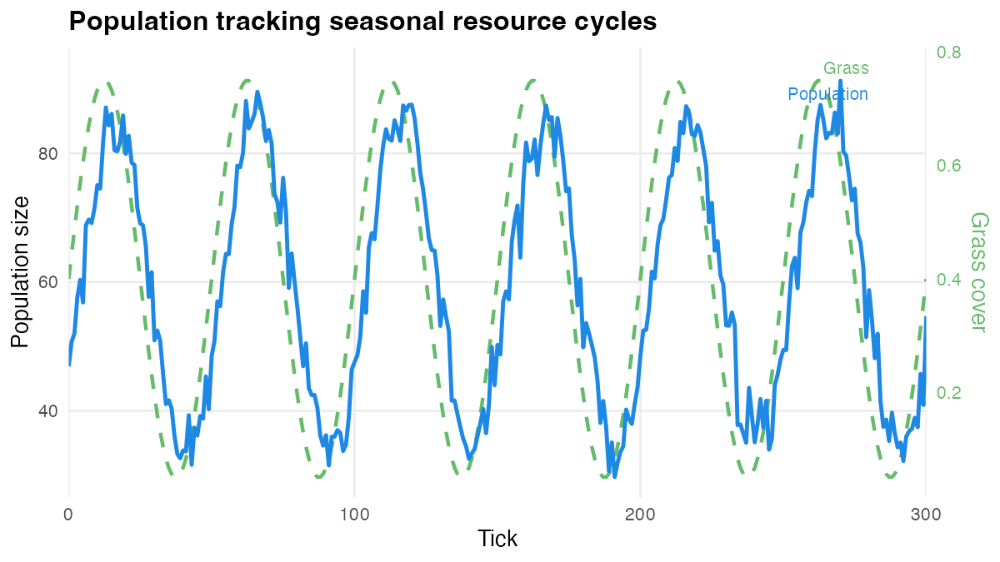
Expected output: population size (blue) tracks scaled grass productivity (green) with a short lag, producing recurrent winter crashes and spring recoveries over approximately five complete cycles.
Habitat preference and ideal free distribution
What it models. The ideal free distribution (IFD)
predicts that, under perfect information and free movement, individuals
should distribute themselves across habitat patches proportionally to
resource availability, equalising per-capita intake rates (Fretwell
& Lucas 1970). In clade, habitat preference is a
heritable, continuously varying trait. Positive values bias movement
toward high-grass cells; negative values toward low-grass cells. When
habitat_preference_evolution = TRUE, selection acts on this
trait because agents that track resource-rich patches acquire more
energy, survive longer, and leave more offspring.
Key parameters.
| Parameter | Default | Effect |
|---|---|---|
habitat_preference_evolution |
FALSE | Enables evolution of the habitat preference trait |
habitat_preference_init_mean |
0.0 | Starting mean preference (0 = no bias) |
habitat_preference_mutation_sd |
0.03 | Mutational step size per generation |
habitat_preference_strength |
0.5 | Strength of bias applied to movement decisions |
Expected output. Watch
mean_habitat_preference over ticks. Starting near zero, the
trait mean should drift toward positive values as agents that prefer
grass-rich cells out-compete those that do not. Spatial plots at the end
of the run should show agents concentrated near dense grass patches,
consistent with the IFD prediction.
library(clade)
library(ggplot2)
s <- default_specs()
s$habitat_preference_evolution <- TRUE
s$habitat_preference_init_mean <- 0.0
s$habitat_preference_mutation_sd <- 0.03
s$habitat_preference_strength <- 0.5
s$n_agents_init <- 100L
s$grid_rows <- 30L
s$grid_cols <- 30L
s$max_ticks <- 400L
env <- run_alife(s)
data <- get_run_data(env)
ggplot(data$ticks, aes(x = t, y = mean_habitat_preference)) +
geom_line(colour = "#6A1B9A", linewidth = 0.8) +
geom_hline(yintercept = 0, linetype = "dashed", colour = "grey50") +
labs(
x = "Tick",
y = "Mean habitat preference",
title = "Evolution of habitat preference toward grass-rich patches"
) +
theme_classic(base_size = 12)Expected output: mean habitat preference rises from zero toward positive values as selection favours individuals that concentrate near high-grass cells, consistent with ideal free distribution theory.
Scavenging and carrion dynamics
What it models. Scavenging — the consumption of
carrion left by dead conspecifics — is a widespread foraging strategy
that provides a resource buffer when primary productivity is low
(DeVault et al. 2003). In clade, when
scavenging = TRUE, agent deaths deposit a fraction of their
remaining energy as carrion on the grid cell where they died. Carrion
decays each tick at rate carrion_decay_rate and can be
consumed by any agent that moves onto the cell, yielding
carrion_eat_gain energy units.
Key parameters.
| Parameter | Default | Effect |
|---|---|---|
scavenging |
FALSE | Enables carrion deposition and consumption |
carrion_fraction |
0.5 | Fraction of a dead agent’s energy deposited as carrion |
carrion_decay_rate |
0.1 | Proportional decay of carrion per tick |
carrion_eat_gain |
3.0 | Energy gained by a scavenger per unit of carrion consumed |
grass_rate |
0.05 | Set low to create resource scarcity that accentuates the scavenging advantage |
Expected output. Under scarce grass conditions, mean agent energy should be higher in the scavenging condition than the baseline, and the total number of deaths should be lower. Carrion provides a density-dependent buffer: more deaths in a tick produce more carrion, partially compensating for the energy deficit that caused those deaths.
library(clade)
library(ggplot2)
base_specs <- function() {
s <- default_specs()
s$n_agents_init <- 100L
s$grid_rows <- 30L
s$grid_cols <- 30L
s$grass_rate <- 0.15
s$max_ticks <- 400L
s
}
s_no <- base_specs(); s_no$scavenging <- FALSE
s_sc <- base_specs()
s_sc$scavenging <- TRUE
s_sc$carrion_fraction <- 0.5
s_sc$carrion_decay_rate <- 0.1
s_sc$carrion_eat_gain <- 3.0
d_no <- get_run_data(run_alife(s_no))$ticks
d_sc <- get_run_data(run_alife(s_sc))$ticks
d_no$condition <- "No scavenging"
d_sc$condition <- "Scavenging"
dat <- rbind(d_no, d_sc)
ggplot(dat, aes(x = t, y = mean_energy, colour = condition)) +
geom_line(linewidth = 0.8) +
scale_colour_manual(
values = c("No scavenging" = "#E53935", "Scavenging" = "#FB8C00"),
name = NULL
) +
labs(
x = "Tick",
y = "Mean agent energy",
title = "Scavenging sustains energy budgets under resource scarcity"
) +
theme_classic(base_size = 12)
Expected output: scavengers (orange) maintain higher mean energy than non-scavengers (red) under identical low-grass conditions, with carrion providing a density-dependent buffer against starvation.
Part III — Reproduction and life history
Parental care
What it models. Offspring are carried by the parent
until graduation at age care_duration. While carried,
juveniles receive energy from the parent at
juvenile_energy_gain per tick. If the parent dies, carried
offspring die too (obligate altriciality). This models the evolutionary
trade-off between clutch size and offspring quality (Smith &
Fretwell 1974).
Key parameters.
| Parameter | Default | Effect |
|---|---|---|
parental_care |
FALSE | Enable parental care |
care_duration |
5 | Ticks offspring are carried |
care_energy_cost |
2.0 | Energy drained from parent per juvenile per tick |
juvenile_energy_gain |
3.0 | Energy transferred to juvenile per tick |
Expected output. n_juveniles is
positive. Per-capita offspring count may be lower than baseline (parents
can carry fewer), but juvenile survival is higher. Population dynamics
are more buffered.
s <- default_specs()
s$parental_care <- TRUE
s$care_duration <- 5L
s$care_energy_cost <- 2.0
s$max_ticks <- 300L
env <- run_alife(s)
data <- get_run_data(env)
cat("Total juveniles recorded:", sum(data$ticks$n_juveniles, na.rm = TRUE), "\n")
Expected output: juvenile count is positive throughout the run; per-capita offspring count is lower than baseline but juvenile survival is higher, resulting in more buffered population dynamics.
Mating systems: sexual versus asexual reproduction
What it models. Sexual reproduction incurs a
well-documented two-fold cost relative to asexual reproduction — every
sexual individual devotes half its offspring capacity to producing males
— yet sex is widespread across eukaryotes (Maynard Smith 1978; Williams
1975). The leading explanations invoke the recombination benefits of
sex: sexual populations generate more genotypic variation per
generation, providing raw material for selection in fluctuating or
parasitised environments. This scenario compares a haploid asexual
population (ploidy = 1L) against a diploid sexual
population (ploidy = 2L, crossover_rate = 0.1)
to illustrate how mating system shapes the trajectory of genetic
diversity.
Key parameters.
| Parameter | Default | Effect |
|---|---|---|
ploidy |
2L | 1 = haploid asexual; 2 = diploid sexual |
crossover_rate |
0.0 | Probability of crossover per chromosome per reproduction event |
n_chromosomes |
1L | Number of chromosome pairs (diploid only) |
dominance_model |
"additive" |
How alleles at the same locus combine |
Expected output. genetic_diversity is
higher and more variable in the sexual condition from early in the run,
as recombination continuously generates novel genotypic combinations.
The asexual population maintains lower diversity and may converge faster
to a local optimum — an advantage in stable environments — but is less
able to respond to environmental change.
library(clade)
library(ggplot2)
s_asex <- default_specs()
s_asex$ploidy <- 1L
s_asex$crossover_rate <- 0.0
s_asex$max_ticks <- 400L
s_asex$random_seed <- 42L
s_sex <- default_specs()
s_sex$ploidy <- 2L
s_sex$crossover_rate <- 0.1
s_sex$max_ticks <- 400L
s_sex$random_seed <- 42L
d_asex <- get_run_data(run_alife(s_asex))$ticks
d_sex <- get_run_data(run_alife(s_sex))$ticks
df <- rbind(
cbind(d_asex[, c("t", "genetic_diversity")], system = "Asexual (haploid)"),
cbind(d_sex[, c("t", "genetic_diversity")], system = "Sexual (diploid)")
)
ggplot(df, aes(t, genetic_diversity, colour = system)) +
geom_line() +
scale_colour_manual(values = c("Asexual (haploid)" = "#377eb8",
"Sexual (diploid)" = "#e41a1c"),
name = NULL) +
labs(title = "Genetic diversity: sexual vs asexual reproduction",
x = "Tick", y = "Genetic diversity") +
theme_minimal()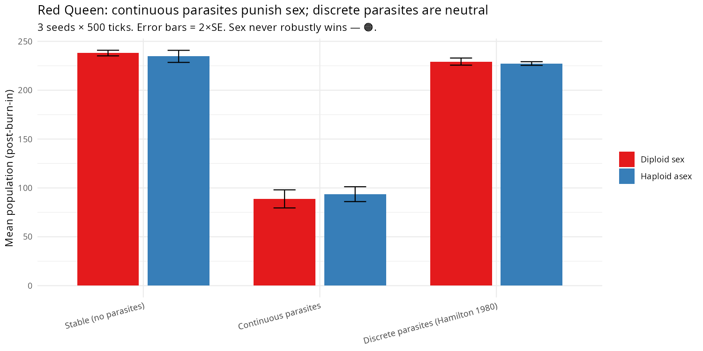
Expected output: genetic diversity is higher and more variable in the sexual (diploid) condition. The asexual population converges to lower diversity more rapidly, illustrating the recombination advantage of sex.
Life history: semelparous versus iteroparous strategies
What it models. Cole’s paradox (Cole 1954) established that the fitness advantage of iteroparity over semelparity is surprisingly small — one additional surviving offspring is sufficient to equalise the two strategies under simple demographic conditions. Real divergence arises from differences in juvenile versus adult survival, resource availability, and the reliability of the reproductive season (Roff 1992). Semelparous organisms invest all reproductive resources in a single event and die; iteroparous organisms spread reproduction across multiple seasons. This scenario contrasts the two life histories, holding other parameters constant, to reveal how each shapes population age structure and birth-rate dynamics.
Key parameters.
| Parameter | Default | Effect |
|---|---|---|
life_history |
"iteroparous" |
"semelparous" triggers post-reproductive death |
max_age |
200L | Maximum attainable age (iteroparous bound) |
senescence_rate |
0.0 | Gompertz senescence coefficient |
repro_senescence |
0.0 | Reproductive decline rate with age |
Expected output. The semelparous population shows a
shorter mean_age and episodic bursts in
n_births coinciding with cohort turnover. The iteroparous
population maintains a smoother, more continuous birth rate and a higher
mean_age, with population size fluctuating less
dramatically between generations.
library(clade)
library(ggplot2)
s_sem <- default_specs()
s_sem$life_history <- "semelparous"
s_sem$max_ticks <- 400L
s_sem$random_seed <- 7L
s_ite <- default_specs()
s_ite$life_history <- "iteroparous"
s_ite$max_ticks <- 400L
s_ite$random_seed <- 7L
d_sem <- get_run_data(run_alife(s_sem))$ticks
d_ite <- get_run_data(run_alife(s_ite))$ticks
df <- rbind(
cbind(d_sem[, c("t", "mean_age", "n_births")], strategy = "Semelparous"),
cbind(d_ite[, c("t", "mean_age", "n_births")], strategy = "Iteroparous")
)
ggplot(df, aes(t, mean_age, colour = strategy)) +
geom_line() +
scale_colour_manual(values = c(Semelparous = "#e41a1c", Iteroparous = "#4daf4a"),
name = NULL) +
labs(title = "Mean age: semelparous vs iteroparous life history",
x = "Tick", y = "Mean agent age") +
theme_minimal()
Expected output: the semelparous population (red) shows lower mean age and episodic birth bursts; the iteroparous population (green) sustains a higher mean age and a smoother birth-rate trajectory.
Clutch size evolution and r/K strategy
What it models. The Lack clutch-size hypothesis
(Lack 1947) proposes that parents should produce the number of offspring
that maximises the number successfully raised, given the resources
available per offspring. Smith & Fretwell (1974) formalised the
quantity–quality trade-off: when resources are scarce, producing fewer,
better-provisioned offspring (K-strategy) yields higher per-offspring
survival than producing many poorly provisioned ones (r-strategy). This
scenario allows clutch size to evolve freely between
clutch_size_min and clutch_size_max under two
contrasting resource environments.
Key parameters.
| Parameter | Default | Effect |
|---|---|---|
clutch_size_evolution |
FALSE | Enable heritable clutch size |
clutch_size_min |
1L | Minimum evolvable clutch size |
clutch_size_max |
5L | Maximum evolvable clutch size |
clutch_size_mutation_sd |
0.3 | Gaussian noise on clutch size per offspring |
grass_rate |
0.10 | Resource renewal rate (varied between conditions) |
Expected output. Under rich resources
(grass_rate = 0.4), mean_clutch_size evolves
towards the upper limit as high reproductive output is sustainable.
Under scarce resources (grass_rate = 0.05), selection
drives mean_clutch_size towards 1–2, consistent with the K
end of the r/K continuum. The two conditions diverge substantially after
approximately 150 ticks.
library(clade)
library(ggplot2)
make_s <- function(gr) {
s <- default_specs()
s$clutch_size_evolution <- TRUE
s$clutch_size_min <- 1L
s$clutch_size_max <- 5L
s$clutch_size_mutation_sd <- 0.3
s$grass_rate <- gr
s$max_ticks <- 400L
s$random_seed <- 3L
s
}
d_rich <- get_run_data(run_alife(make_s(0.4)))$ticks
d_scar <- get_run_data(run_alife(make_s(0.05)))$ticks
df <- rbind(
cbind(d_rich[, c("t", "mean_clutch_size")], environment = "Rich (0.4)"),
cbind(d_scar[, c("t", "mean_clutch_size")], environment = "Scarce (0.05)")
)
ggplot(df, aes(t, mean_clutch_size, colour = environment)) +
geom_line() +
scale_colour_manual(
values = c("Rich (0.4)" = "#e41a1c", "Scarce (0.05)" = "#377eb8"),
name = NULL) +
labs(title = "Clutch size evolution under contrasting resource availability",
x = "Tick", y = "Mean clutch size") +
theme_minimal()
Expected output: mean clutch size diverges between resource environments. Rich conditions (red) select for larger clutches; scarce conditions (blue) select for smaller clutches, illustrating the r/K continuum.
Parental investment: quality versus quantity
What it models. Trivers (1972) proposed that the sex
that invests more per offspring should be the one that is more choosy in
mate selection, because its reproductive success is more constrained by
parental effort than by mate access. Houston & Davies (1985)
extended this to biparental care games, showing that evolutionarily
stable investment levels depend on the shape of the offspring fitness
function. This scenario holds parental_care = TRUE and
varies female_investment — the fraction of care energetics
contributed by the female — to examine how the allocation of investment
between parents affects offspring provisioning and survival.
Key parameters.
| Parameter | Default | Effect |
|---|---|---|
parental_investment_evolution |
FALSE | Allow investment proportions to evolve |
parental_care |
FALSE | Enable offspring carrying and provisioning |
female_investment |
0.7 | Fraction of total care energy contributed by the mother |
male_repro_cost |
0.3 | Energy cost to the male per reproductive event |
Expected output. High maternal investment
(female_investment = 0.9) produces fewer offspring per
female per tick (greater parental cost) but increases mean energy at
graduation, reflecting better-provisioned juveniles. Equal investment
(female_investment = 0.5) produces more offspring but with
lower mean juvenile energy. The trade-off is visible in
n_births and mean_juvenile_energy
trajectories.
library(clade)
library(ggplot2)
make_s <- function(fi) {
s <- default_specs()
s$parental_care <- TRUE
s$parental_investment_evolution <- TRUE
s$female_investment <- fi
s$male_repro_cost <- 0.3
s$max_ticks <- 400L
s$random_seed <- 11L
s
}
d_hi <- get_run_data(run_alife(make_s(0.9)))$ticks
d_eq <- get_run_data(run_alife(make_s(0.5)))$ticks
df <- rbind(
cbind(d_hi[, c("t", "n_births", "mean_juvenile_energy")],
condition = "High maternal (0.9)"),
cbind(d_eq[, c("t", "n_births", "mean_juvenile_energy")],
condition = "Equal (0.5)")
)
ggplot(df, aes(t, mean_juvenile_energy, colour = condition)) +
geom_line() +
scale_colour_manual(
values = c("High maternal (0.9)" = "#e41a1c", "Equal (0.5)" = "#377eb8"),
name = NULL) +
labs(title = "Juvenile energy by parental investment allocation",
x = "Tick", y = "Mean juvenile energy at graduation") +
theme_minimal()
Expected output: high maternal investment (red) produces fewer but better-provisioned offspring; equal investment (blue) produces more offspring at lower individual quality, illustrating the quality-quantity trade-off.
Pace-of-life syndromes
What it models. Pace-of-life syndromes (Réale et al. 2010) describe the co-variation of life-history traits, behaviour, and physiology along a slow–fast continuum. Fast-living organisms have high metabolic rates, reproduce early and often, and die young; slow-living organisms invest in maintenance, defer reproduction, and achieve longer lifespans. Stearns (1992) formalised this as a consequence of the age-specific mortality schedule: high extrinsic mortality selects for early reproduction and fast metabolism. This scenario fixes metabolic rate across three values to isolate the direct effect of metabolic pace on the age–reproduction–energy trade-off.
Key parameters.
| Parameter | Default | Effect |
|---|---|---|
metabolic_rate_init_mean |
1.0 | Initial (and fixed) metabolic rate |
metabolic_rate_evolution |
FALSE | Keep metabolic rate fixed for this scenario |
metabolic_rate_min |
0.1 | Lower clamp (relevant when evolution is enabled) |
metabolic_rate_max |
5.0 | Upper clamp |
Expected output. Fast-pace agents
(metabolic_rate_init_mean = 2.0) exhibit higher
n_births per tick, lower mean_age, and higher
energy throughput, but their populations are more volatile. Slow-pace
agents (metabolic_rate_init_mean = 0.5) show lower birth
rate, higher mean_age, and more stable
mean_energy. Fast agents dominate in productive
environments; slow agents persist more reliably when resources are
lean.
library(clade)
library(ggplot2)
make_run <- function(rate, seed = 99L) {
s <- default_specs()
s$metabolic_rate_init_mean <- rate
s$metabolic_rate_evolution <- FALSE
s$max_ticks <- 400L
s$random_seed <- seed
get_run_data(run_alife(s))$ticks
}
d_slow <- make_run(0.5)
d_baseline <- make_run(1.0)
d_fast <- make_run(2.0)
df <- rbind(
cbind(d_slow[, c("t", "mean_age", "n_births")], pace = "Slow (0.5)"),
cbind(d_baseline[, c("t", "mean_age", "n_births")], pace = "Baseline (1.0)"),
cbind(d_fast[, c("t", "mean_age", "n_births")], pace = "Fast (2.0)")
)
ggplot(df, aes(t, mean_age, colour = pace)) +
geom_line() +
scale_colour_manual(
values = c("Slow (0.5)" = "#377eb8", "Baseline (1.0)" = "#4daf4a",
"Fast (2.0)" = "#e41a1c"),
name = NULL) +
labs(title = "Pace-of-life: mean age across metabolic rates",
x = "Tick", y = "Mean agent age") +
theme_minimal()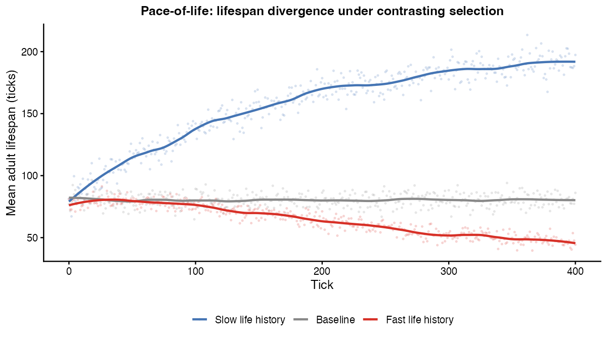
Expected output: slow-pace agents (blue) maintain the highest mean age; fast-pace agents (red) have the lowest mean age but the highest per-tick birth rate. The three trajectories illustrate the life-history trade-off along the slow-fast continuum.
Part IV — Social and coevolutionary dynamics
Mimicry and toxicity
What it models. A heritable toxicity
trait makes prey costly to attack. Predators learn signal–toxicity
associations via a Rescorla-Wagner rule and build avoidance. This models
the evolution of warning coloration and Batesian/ Müllerian mimicry
(Ruxton et al. 2004): toxic prey are avoided; non-toxic prey that
resemble toxic prey are also avoided (Batesian mimicry).
Key parameters.
| Parameter | Default | Effect |
|---|---|---|
mimicry |
FALSE | Enable toxicity / predator learning |
toxicity_init_mean |
0.0 | Starting toxicity (0 = non-toxic) |
toxin_dose |
2.0 | Damage dealt to attacker per toxicity unit |
signal_memory |
20 | Predator memory window for learning |
Expected output. mean_toxicity evolves
upward under predator pressure. n_avoided_attacks increases
as predators learn. n_toxic_attacks may peak and then
decline as predators avoid toxic prey.
s <- default_specs()
s$mimicry <- TRUE
s$n_predators_init <- 5L
s$toxicity_init_mean <- 0.1
s$max_ticks <- 300L
env <- run_alife(s)
data <- get_run_data(env)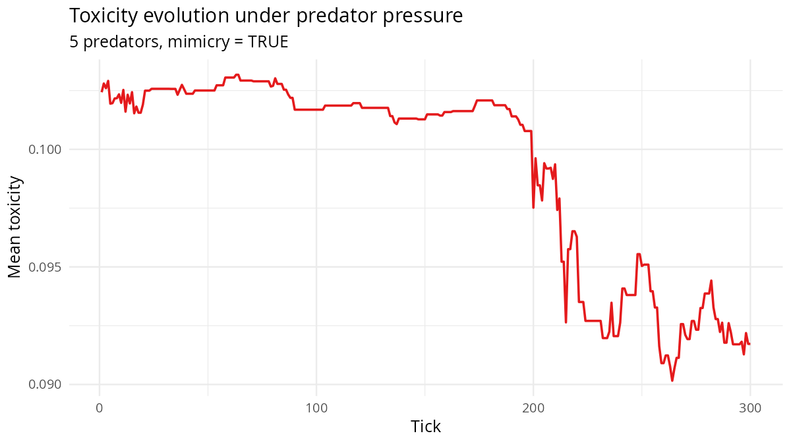
Expected output: mean toxicity rises under predator pressure; avoided attacks increase as predators learn to avoid toxic prey; toxic attack rate declines.
Cooperative breeding and public goods
What it models. When
cooperation_evolution = TRUE, each agent carries a
heritable cooperation tendency trait that determines its contribution to
a local public goods pool. The pool benefit is shared among all agents
in the neighbourhood, scaled by cooperation_multiplier,
while contributors pay a fixed cooperation_cost. This
implements a spatially explicit Prisoner’s Dilemma: defectors (low
tendency) free-ride on cooperators but, because interactions are local,
spatial clustering of cooperators can shield them from invasion by
defectors — a result established analytically by Nowak & May (1992)
and extended to continuous strategies by Hauert et al. (2002).
Key parameters.
| Parameter | Default | Effect |
|---|---|---|
cooperation_evolution |
FALSE | Enables heritable cooperation tendency |
cooperation_multiplier |
2.0 | Return multiplier on pooled contributions |
cooperation_cost |
1.0 | Per-tick energy cost paid by the contributor |
cooperation_init_mean |
0.5 | Initial mean cooperation tendency |
cooperation_mutation_sd |
0.05 | Mutation standard deviation on the trait |
Expected output. Track
mean_cooperation_tendency over ticks. When
cooperation_multiplier exceeds the cost-benefit threshold
(here 2.5 > 1.0 / 0.5 = 2.0), cooperation is favoured and the
population-mean tendency should rise toward 1.0; spatial structure
sustains cooperation even at intermediate global frequencies.
library(clade)
library(ggplot2)
s <- default_specs()
s$cooperation_evolution <- TRUE
s$cooperation_multiplier <- 2.5
s$cooperation_cost <- 1.0
s$max_ticks <- 400L
env <- run_alife(s)
data <- get_run_data(env)
ggplot(data$ticks, aes(x = t, y = mean_cooperation_tendency)) +
geom_line(colour = "#1b7837", linewidth = 0.8) +
geom_smooth(method = "loess", se = TRUE, colour = "#762a83",
fill = "#c2a5cf", alpha = 0.3) +
labs(
title = "Evolution of cooperation tendency",
subtitle = "cooperation_multiplier = 2.5, cost = 1.0",
x = "Tick", y = "Mean cooperation tendency"
) +
theme_minimal()
Expected output: mean cooperation tendency rises over evolutionary time when the multiplier exceeds the cost-benefit threshold. Spatial clustering accelerates the transition by shielding cooperator clusters from defector invasion.
Signals and mate choice: sexual selection
What it models. Sexual selection can produce
elaborate traits that reduce survival but increase mating success. Two
contrasting mechanisms have been proposed. Zahavi’s (1975) handicap
principle requires that signals be condition-dependent and costly to
maintain, so only high-quality individuals can afford elaborate signals;
signal magnitude is then an honest indicator of genetic quality.
Fisher’s (1930) runaway process operates through a genetic correlation
between signal elaboration and preference: once females prefer a trait,
sons of choosy females inherit the trait and daughters inherit the
preference, driving both to fixation. This scenario enables
multi-dimensional signals and female preference, allowing both
mechanisms to operate, and tracks whether signal magnitude remains
correlated with mean_energy (consistent with honest
signalling) or becomes decoupled (consistent with runaway dynamics).
Key parameters.
| Parameter | Default | Effect |
|---|---|---|
signal_dims |
0L | Number of heritable signal dimensions |
signal_cost |
0.1 | Energy cost per unit of total signal magnitude |
mate_choice_mode |
"random" |
"preference" enables directional mate choice |
mate_choice_strength |
0.5 | Weight given to signal match in mate selection |
Expected output. mean_signal_magnitude
increases over time as sexual selection drives signal elaboration. When
signal_cost is sufficient to maintain honesty,
mean_signal_magnitude correlates positively with
mean_energy: agents in better condition carry more
elaborate signals. A weak or zero signal_cost allows
decoupling of signal from condition, consistent with runaway
dynamics.
library(clade)
library(ggplot2)
s <- default_specs()
s$signal_dims <- 3L
s$signal_cost <- 0.05
s$mate_choice_mode <- "preference"
s$mate_choice_strength <- 0.7
s$max_ticks <- 400L
s$random_seed <- 21L
env <- run_alife(s)
data <- get_run_data(env)
p1 <- ggplot(data$ticks, aes(t, mean_signal_magnitude)) +
geom_line(colour = "#984ea3") +
labs(title = "Signal elaboration under sexual selection",
x = "Tick", y = "Mean signal magnitude") +
theme_minimal()
p2 <- ggplot(data$ticks, aes(mean_energy, mean_signal_magnitude)) +
geom_point(alpha = 0.4, size = 0.8, colour = "#984ea3") +
geom_smooth(method = "lm", se = FALSE, colour = "#333333", linewidth = 0.7) +
labs(title = "Signal magnitude vs mean energy (honest signalling check)",
x = "Mean energy", y = "Mean signal magnitude") +
theme_minimal()
print(p1)
print(p2)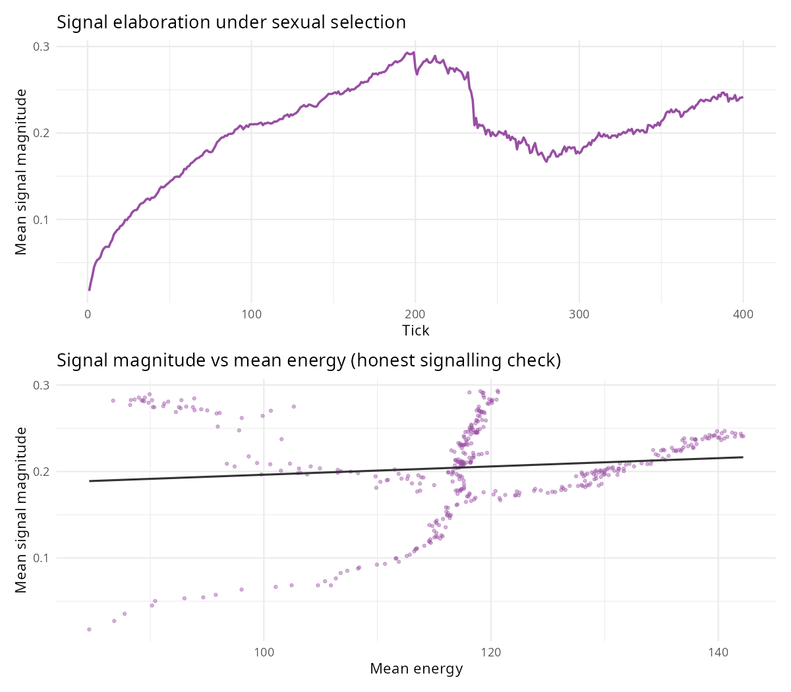
Expected output: mean signal magnitude rises over time as sexual selection drives elaboration. A positive correlation between signal magnitude and mean energy indicates that the handicap mechanism is maintaining signal honesty.
Speciation and genetic divergence
What it models. Speciation by ecological character
displacement occurs when disruptive selection on a resource-use trait,
combined with assortative mating among similar phenotypes, drives a
single population to split into reproductively isolated lineages
(Dieckmann & Doebeli 1999). Once genomes diverge beyond a threshold,
gene flow between incipient species is reduced, accelerating further
divergence. Coyne & Orr (2004) reviewed extensive empirical evidence
that reproductive isolation accumulates approximately linearly with
genetic distance. This scenario enables the speciation module, tracks
the number of distinct genetic clusters (n_species)
detected at regular intervals, and illustrates how within-species
diversity compares to between-species divergence over the course of the
run.
Key parameters.
| Parameter | Default | Effect |
|---|---|---|
speciation |
FALSE | Enable genetic-cluster detection and isolation |
isolation_threshold |
0.5 | Minimum genetic distance required for reproductive isolation |
speciation_cluster_interval |
10L | Ticks between cluster re-detection passes |
Expected output. n_species starts at 1
and rises to 2–4 as accumulated genome divergence exceeds
isolation_threshold in geographically or ecologically
separated subpopulations. Within-cluster genetic diversity remains lower
than between-cluster diversity once isolation is established. The timing
of the first split depends on population size, mutation rate, and the
stringency of isolation_threshold.
library(clade)
library(ggplot2)
s <- default_specs()
s$speciation <- TRUE
s$isolation_threshold <- 0.5
s$speciation_cluster_interval <- 10L
s$max_ticks <- 500L
s$random_seed <- 55L
env <- run_alife(s)
data <- get_run_data(env)
ggplot(data$ticks, aes(t, n_species)) +
geom_step(colour = "#ff7f00", linewidth = 0.9) +
scale_y_continuous(breaks = 1:8) +
labs(title = "Speciation: number of distinct genetic clusters over time",
x = "Tick", y = "Number of species (clusters)") +
theme_minimal()
Expected output: n_species rises from 1 to 2-4 as genome divergence accumulates beyond the isolation threshold. Each step in the staircase represents a speciation event.
Part V — Learning and cognition
Within-lifetime reinforcement learning
What it models. Each agent uses REINFORCE-with-baseline (actor-critic) to update its brain’s output layer based on energy reward signals during its lifetime. This implements the Baldwin effect: individually-learned behaviours can stabilise genetically over generations because learning relaxes the requirement for genes to encode the exact optimal behaviour.
Key parameters.
| Parameter | Default | Effect |
|---|---|---|
rl_mode |
"none" |
Set to "actor_critic" to enable |
rl_update_freq |
5 | Ticks between RL updates |
learning_rate |
0.01 | Step size for output-layer update |
learning_rate_evolution |
FALSE | Allow learning rate to evolve |
Expected output. Agents with RL enabled adapt within
their lifetime to the local resource distribution. When
learning_rate_evolution = TRUE, the evolved learning rate
reflects the environmental uncertainty: noisy environments favour lower
rates; stable environments favour higher rates.
s <- default_specs()
s$rl_mode <- "actor_critic"
s$max_ticks <- 300L
env <- run_alife(s)
data <- get_run_data(env)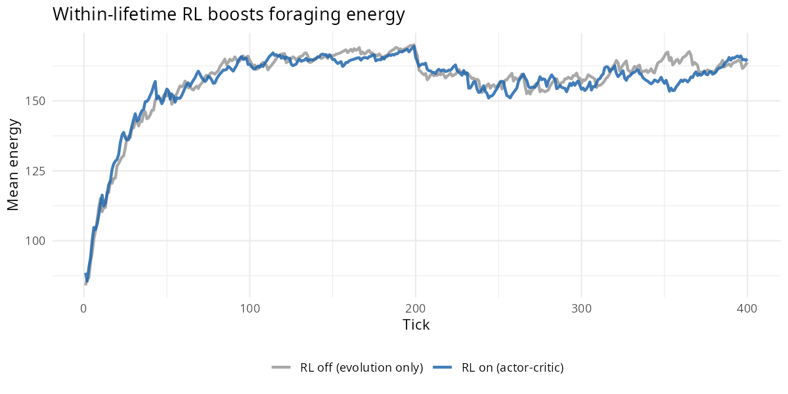
Expected output: agents with within-lifetime RL adapt to local resource distribution within their lifetime. The Baldwin Effect is visible as the BNN prior sigma narrows over generations.
Phenotypic plasticity
What it models. A heritable plasticity
trait modulates how strongly each agent’s sensory input maps to action.
High plasticity agents are more responsive to environmental cues; low
plasticity agents rely more heavily on their evolved baseline behaviour.
The evolution of plasticity tracks environmental variability: plastic
phenotypes are favoured when environments are predictably unpredictable
(DeWitt & Scheiner 2004).
Key parameters.
| Parameter | Default | Effect |
|---|---|---|
phenotypic_plasticity |
FALSE | Enable plasticity trait |
plasticity_init_mean |
0.5 | Starting plasticity |
plasticity_mutation_sd |
0.05 | Mutation rate |
Expected output. mean_plasticity
evolves. In stable environments (fixed grass_rate),
plasticity typically decreases over time. In seasonally varying
environments, plasticity may be maintained.
s <- default_specs()
s$phenotypic_plasticity <- TRUE
s$max_ticks <- 300L
env <- run_alife(s)
data <- get_run_data(env)
cat("Final plasticity:", tail(data$ticks$mean_plasticity, 1L), "\n")
Expected output: mean plasticity evolves over time. In stable environments it typically decreases; in seasonally varying environments it is maintained at intermediate values.
BNN uncertainty canalization — the Baldwin Effect
What it models. The Bayesian neural network (BNN)
brain type (brain_type = "bnn") places a prior distribution
over each synaptic weight, parameterised by a standard deviation σ. A
large σ encodes behavioural flexibility: the agent samples widely from
its weight posterior and can learn within its lifetime. A small σ
encodes genetic assimilation: the agent’s behaviour is largely
determined by the prior mean — the population has, over generations of
selection, canalized a formerly learned behaviour into the genome. This
is the computational signature of the Baldwin Effect (Baldwin 1896),
formalised computationally by Hinton & Nowlan (1987) and analysed
analytically by Mayley (1996): learning guides evolution toward fixed
adaptive solutions, after which the learning machinery becomes
redundant.
Key parameters.
| Parameter | Default | Effect |
|---|---|---|
brain_type |
"bnn" |
Must be "bnn" to enable Bayesian weight
distributions |
learning_rate_init_mean |
0.01 | Initial within-lifetime learning rate |
max_ticks |
— | Longer runs show fuller canalization |
Expected output. Track mean_prior_sigma
in data$ticks. The column should decline from approximately
0.3 (broad, flexible priors) toward 0.05 (narrow, assimilated priors) as
selection repeatedly rewards the same weight configurations. The decline
rate should accelerate when genetic diversity is high, because a large
pool of variants provides a stronger selection gradient.
library(clade)
library(ggplot2)
s <- default_specs()
s$brain_type <- "bnn"
s$max_ticks <- 500L
env <- run_alife(s)
data <- get_run_data(env)
ggplot(data$ticks, aes(x = t, y = mean_prior_sigma)) +
geom_line(colour = "#2166ac", linewidth = 0.8, alpha = 0.7) +
geom_smooth(method = "lm", se = TRUE,
colour = "#d6604d", fill = "#f4a582", alpha = 0.4) +
labs(
title = "Genetic assimilation of learned behaviour (Baldwin Effect)",
subtitle = "BNN prior sigma declines as behaviour canalizes into the genome",
x = "Tick", y = expression("Mean prior " * sigma)
) +
theme_minimal()
Expected output: mean prior sigma declines monotonically from broad (flexible, ~0.3) to narrow (assimilated, ~0.05), with the steepest drop in periods of high genetic diversity. A fitted linear trend confirms the directional pattern.
The cephalopod paradox — short lifespan selects for fast learning
What it models. Classical life-history theory
predicts that long-lived organisms should invest more heavily in
learning, because only a long lifespan provides enough time to recoup
the energetic costs of a large brain (the payback period argument). The
cephalopod paradox inverts this prediction: octopuses and squid have
among the shortest lifespans of any large-brained animal, yet they
express sophisticated within-lifetime learning. Liedtke & Fromhage
(2019) formalised the resolution: when lifespan is too brief for genetic
evolution to converge on food-finding solutions, within-lifetime
learning becomes the only viable mechanism for adaptive behaviour. Here,
complex_landscape = TRUE creates a heterogeneous resource
topology that cannot be solved by a fixed behavioural rule, and
learning_rate_evolution = TRUE allows the genome to
optimise how quickly agents update their neural weights from
experience.
Key parameters.
| Parameter | Default | Effect |
|---|---|---|
max_age |
— | Maximum agent lifespan in ticks |
complex_landscape |
FALSE | Enables spatially heterogeneous, shifting resource patches |
learning_rate_evolution |
FALSE | Makes the within-lifetime learning rate a heritable trait |
learning_rate_init_mean |
0.01 | Initial mean evolved learning rate |
Expected output. The evolved mean learning rate
(recorded at the final tick of each run) should be highest at short
max_age values and decline as lifespan increases, because
long-lived agents can afford to rely on genetic evolution to encode
solutions directly. The relationship need not be monotone at very short
lifespans, where agents have too little experience to benefit from any
learning.
library(clade)
library(ggplot2)
lifespans <- c(20L, 50L, 100L, 200L)
specs_list <- lapply(lifespans, function(ma) {
s <- default_specs()
s$max_age <- ma
s$complex_landscape <- TRUE
s$learning_rate_evolution <- TRUE
s$max_ticks <- 400L
s
})
names(specs_list) <- paste0("max_age_", lifespans)
results <- batch_alife(specs_list, n_cores = 4L)
lr_df <- do.call(rbind, mapply(function(env, ma) {
d <- get_run_data(env)$ticks
data.frame(
max_age = ma,
mean_lr_final = tail(d$mean_learning_rate, 1L)
)
}, results, lifespans, SIMPLIFY = FALSE))
ggplot(lr_df, aes(x = max_age, y = mean_lr_final)) +
geom_line(colour = "#e08214", linewidth = 1) +
geom_point(size = 3, colour = "#8073ac") +
labs(
title = "The cephalopod paradox: short lifespan selects for fast learning",
subtitle = "Evolved mean learning rate at end of run, by maximum lifespan",
x = "Maximum lifespan (ticks)", y = "Evolved mean learning rate"
) +
theme_minimal()
Expected output: evolved learning rate is highest under the shortest lifespan (max_age = 20) and declines as lifespan increases, consistent with the cephalopod paradox. Genetic evolution substitutes for within-lifetime learning when the payback period is long enough.
Stress hypermutation — the SOS response
What it models. In bacteria, severe DNA damage or
prolonged resource depletion triggers the SOS response: a suite of
error-prone polymerases that dramatically increase the genomic mutation
rate (McKenzie & Rosenberg 2001). This is a bet-hedging strategy —
most mutations are deleterious, but the expanded variance in offspring
phenotype increases the probability that at least one lineage will
escape the current fitness trough. When
stress_hypermutation = TRUE, agents whose energy falls
below stress_threshold apply a mutation rate multiplied by
stress_mutation_multiplier to their neural genome. Pairing
this with a scarce-resource environment (grass_rate = 0.05)
ensures that stress is frequent enough to detect the effect within a
tractable run length.
Key parameters.
| Parameter | Default | Effect |
|---|---|---|
stress_hypermutation |
FALSE | Enables condition-dependent mutation rate elevation |
stress_threshold |
20.0 | Energy level below which hypermutation activates |
stress_mutation_multiplier |
3.0 | Factor by which mutation rate is scaled under stress |
grass_rate |
— | Resource regrowth rate; reduce to impose chronic scarcity |
Expected output. Compare
genetic_diversity trajectories across the two conditions.
Under stress hypermutation, diversity should spike transiently during
resource crashes (low mean_energy epochs), followed by
faster adaptive recovery as beneficial mutants sweep. The baseline
condition should show slower, smoother recovery after equivalent
crashes.
library(clade)
library(ggplot2)
make_s <- function(hypermut) {
s <- default_specs()
s$stress_hypermutation <- hypermut
s$stress_threshold <- 20.0
s$stress_mutation_multiplier <- 5.0
s$grass_rate <- 0.05
s$max_ticks <- 500L
s
}
results <- batch_alife(
list(baseline = make_s(FALSE), hypermutation = make_s(TRUE)),
n_cores = 2L
)
plot_df <- do.call(rbind, mapply(function(env, nm) {
d <- get_run_data(env)$ticks
data.frame(t = d$t, genetic_diversity = d$genetic_diversity, condition = nm)
}, results, names(results), SIMPLIFY = FALSE))
ggplot(plot_df, aes(x = t, y = genetic_diversity, colour = condition)) +
geom_line(linewidth = 0.7, alpha = 0.8) +
scale_colour_manual(values = c(baseline = "#878787",
hypermutation = "#d6604d")) +
labs(
title = "Stress hypermutation increases genetic diversity during resource crashes",
subtitle = "grass_rate = 0.05; stress_mutation_multiplier = 5",
x = "Tick", y = "Genetic diversity", colour = "Condition"
) +
theme_minimal()
Expected output: genetic diversity is transiently elevated in the stress-hypermutation condition during resource-crash epochs. Adaptive recovery is faster in the hypermutation condition as beneficial variants spread more rapidly through the population.
Part VI — Population genetics
Population genetics and narrow-sense heritability
What it models. A central quantity in quantitative
genetics is narrow-sense heritability, h² — the proportion of phenotypic
variance in a trait that is attributable to additive genetic effects
(Falconer & Mackay 1996; Lynch & Walsh 1998). A trait cannot
respond to natural selection unless h² > 0. The
estimate_heritability() function performs parent-offspring
regression on pedigree records accumulated during the simulation:
offspring trait values are regressed on mid-parent values, and the slope
estimates h². When body_size_evolution = TRUE, body size is
a polygenic trait encoded in the neural genome and subject to both
mutation and selection, making it a suitable target for heritability
analysis within a single run.
Key parameters.
| Parameter | Default | Effect |
|---|---|---|
body_size_evolution |
FALSE | Enables heritable, evolving body size |
max_ticks |
— | Longer runs accumulate more parent-offspring pairs |
Expected output. h² for body_size
should be substantially positive (0.3–0.7) early in the run, reflecting
the strong additive genetic architecture of a freshly initialised
population. As directional selection erodes genetic variance, h² may
decline in later ticks. The 95% confidence interval from the regression
should exclude zero. h² for energy is expected to be lower,
because energy is heavily influenced by the local environment.
library(clade)
s <- default_specs()
s$body_size_evolution <- TRUE
s$max_ticks <- 500L
env <- run_alife(s)
data <- get_run_data(env)
h2 <- estimate_heritability(data, trait = "body_size")
cat("Heritability h\u00b2:", round(h2$h2, 3), "\n")
cat("95% CI: [", round(h2$ci[1], 3), ",", round(h2$ci[2], 3), "]\n")
plot(h2) # parent-offspring regression scatter with fitted line
Expected output: parent-offspring regression for body size with a positive slope (h² = 0.3-0.7). Each point is one offspring plotted against its mid-parent value. The shaded band is the 95% confidence interval on the regression line.
Part VII — Comparative experiments
Predation and neural evolution
What it models. Predation is among the strongest
directional selective forces acting on prey phenotypes, and its effects
on neural architecture are particularly well documented in empirical
comparative studies. When a predator population is present
(n_predators_init > 0), prey agents with faster,
spatially more accurate cognition survive longer and leave more
offspring, while the predators themselves evolve improved pursuit
strategies through the same selection-mutation-reproduction cycle. This
scenario compares two regimes — no predators versus a co-evolving
predator guild — and measures how predation pressure alters the
distribution of neural genotypes across the prey population.
Key parameters.
| Parameter | Default | Effect |
|---|---|---|
n_predators_init |
0L | Number of predators at initialisation |
n_agents_init |
— | Initial prey population size |
max_ticks |
— | Simulation length |
Expected output. Predation is expected to increase
genetic_diversity in the prey population by imposing strong
directional selection on cognition, thereby maintaining or generating
variance in neural genotypes. Mean energy may decline under predation
because prey pay metabolic costs of evasion and are more frequently
killed before reaching peak foraging efficiency.
library(clade)
library(ggplot2)
library(patchwork)
make_s <- function(n_pred) {
s <- default_specs()
s$n_agents_init <- 80L
s$n_predators_init <- n_pred
s$max_ticks <- 500L
s
}
results <- batch_alife(
list(no_predators = make_s(0L), predators = make_s(10L)),
n_cores = 2L
)
plot_df <- do.call(rbind, mapply(function(env, nm) {
d <- get_run_data(env)$ticks
data.frame(
t = d$t,
genetic_diversity = d$genetic_diversity,
mean_energy = d$mean_energy,
condition = nm
)
}, results, names(results), SIMPLIFY = FALSE))
p1 <- ggplot(plot_df, aes(x = t, y = genetic_diversity, colour = condition)) +
geom_line(linewidth = 0.7) +
scale_colour_manual(values = c(no_predators = "#4dac26",
predators = "#d01c8b")) +
labs(title = "Predation and neural genome diversity",
x = "Tick", y = "Genetic diversity", colour = NULL) +
theme_minimal()
p2 <- ggplot(plot_df, aes(x = t, y = mean_energy, colour = condition)) +
geom_line(linewidth = 0.7) +
scale_colour_manual(values = c(no_predators = "#4dac26",
predators = "#d01c8b")) +
labs(x = "Tick", y = "Mean energy", colour = NULL) +
theme_minimal()
p1 / p2
Expected output (top panel): genetic diversity is higher under predation, reflecting stronger directional selection on prey cognition. Bottom panel: mean energy is lower under predation as prey pay evasion costs and are removed before reaching peak foraging efficiency.
Module comparison — 14-condition experiment
What it models. Biological systems are shaped by multiple interacting selective pressures, but their individual contributions are difficult to disentangle in nature. This scenario applies a one-module-at-a-time factorial design: each condition activates exactly one module above the shared baseline, and three summary statistics — mean genetic diversity, mean population size, and mean energy — are recorded across the full run. Comparing modules in isolation before combining them allows each module’s unique contribution to be identified; the all-on condition then reveals emergent interactions that cannot be predicted from the single-module results alone.
Key parameters.
| Parameter | Default | Effect |
|---|---|---|
n_predators_init |
0L | Adds co-evolving predator pressure |
disease |
FALSE | Activates SIR epidemic dynamics |
kin_selection |
FALSE | Enables pedigree-based altruistic transfers |
niche_construction |
FALSE | Agents build and inherit shelters |
rl_mode |
"none" |
Set to "actor_critic" for within-lifetime RL |
social_learning |
FALSE | Copies output-layer weights from successful neighbours |
body_size_evolution |
FALSE | Heritable metabolic scaling |
dispersal_evolution |
FALSE | Heritable dispersal tendency |
cooperation_evolution |
FALSE | Heritable cooperation trait with public goods |
complex_landscape |
FALSE | Spatially heterogeneous, shifting resource patches |
Expected output. Modules imposing strong directional selection — predators and disease — tend to increase genetic diversity by maintaining a selective gradient; modules that smooth energy acquisition — niche construction, social learning — may reduce within-population variance. The all-on condition typically reveals non-additive interactions: cooperation and kin selection can partially compensate for disease mortality, and niche construction can buffer the energetic cost of predation evasion.
library(clade)
library(ggplot2)
make_specs <- function(...) {
s <- default_specs()
s$max_ticks <- 300L
args <- list(...)
for (nm in names(args)) s[[nm]] <- args[[nm]]
s
}
specs_list <- list(
baseline = make_specs(),
predators = make_specs(n_predators_init = 5L),
disease = make_specs(disease = TRUE),
kin = make_specs(kin_selection = TRUE),
niche = make_specs(niche_construction = TRUE),
rl = make_specs(rl_mode = "actor_critic"),
social = make_specs(social_learning = TRUE),
body_size = make_specs(body_size_evolution = TRUE),
dispersal = make_specs(dispersal_evolution = TRUE),
care = make_specs(parental_care = TRUE),
mimicry = make_specs(mimicry = TRUE, n_predators_init = 5L),
landscape = make_specs(complex_landscape = TRUE),
cooperation = make_specs(cooperation_evolution = TRUE),
all_on = make_specs(
n_predators_init = 5L,
disease = TRUE,
kin_selection = TRUE,
niche_construction = TRUE,
rl_mode = "actor_critic",
social_learning = TRUE,
body_size_evolution = TRUE,
dispersal_evolution = TRUE,
cooperation_evolution = TRUE
)
)
results <- batch_alife(specs_list, n_cores = 4L)
summary_df <- do.call(rbind, mapply(function(env, nm) {
d <- get_run_data(env)$ticks
data.frame(
condition = nm,
mean_diversity = mean(d$genetic_diversity, na.rm = TRUE),
mean_pop = mean(d$n_agents, na.rm = TRUE),
mean_energy = mean(d$mean_energy, na.rm = TRUE)
)
}, results, names(results), SIMPLIFY = FALSE))
ggplot(summary_df,
aes(x = reorder(condition, mean_diversity), y = mean_diversity)) +
geom_col(fill = "#4dac26") +
coord_flip() +
labs(
title = "Mean genetic diversity by module condition",
x = NULL,
y = "Mean genetic diversity"
) +
theme_minimal()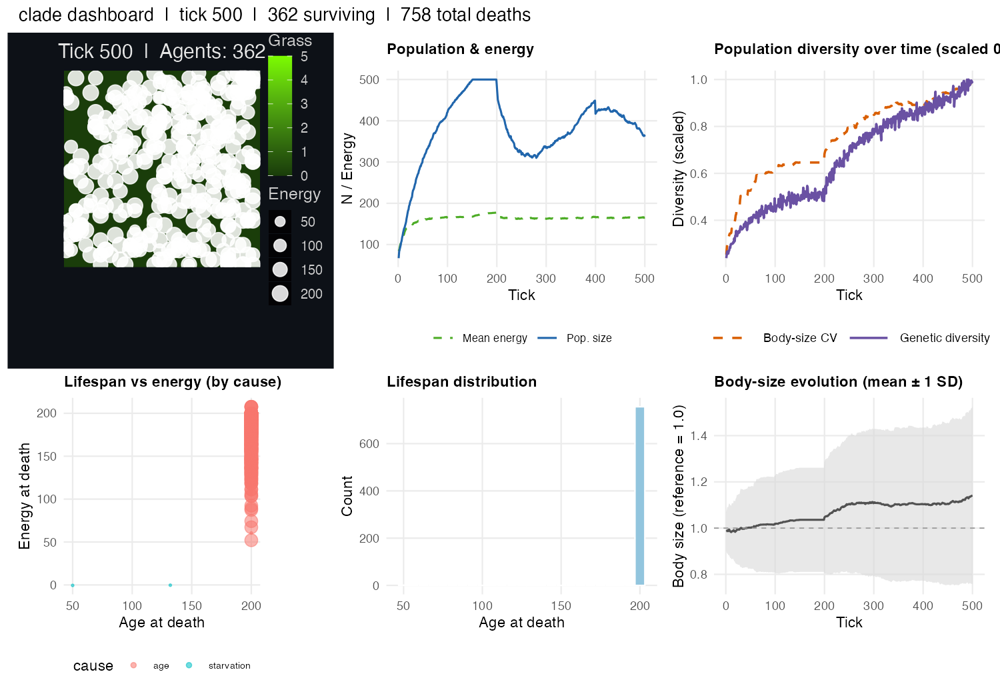
Expected output: horizontal bar chart of mean genetic diversity across all 14 conditions. Conditions imposing strong directional selection (predators, disease, mimicry) appear near the top; the all-on condition reveals emergent multi-module interactions.
Combining modules — a kitchen-sink run
What it models. The preceding sections isolate
individual mechanisms to establish clear cause-and-effect relationships.
Real ecosystems combine many selective pressures simultaneously, and
their interactions are often non-additive. A multi-module run
demonstrates that clade’s design is genuinely
compositional: any combination of modules can be enabled together
without special-casing, and the emergent dynamics are richer than the
sum of their parts.
Key parameters.
| Parameter | Setting | Module |
|---|---|---|
complex_landscape |
TRUE | Heterogeneous habitat structure |
n_predators_init |
5 | Predation pressure |
disease |
TRUE | SIR infectious disease dynamics |
kin_selection |
TRUE | Kin-based energy transfer |
social_learning |
TRUE | Copy successful neighbours’ policies |
rl_mode |
"actor_critic" |
Within-lifetime policy gradient learning |
niche_construction |
TRUE | Agents build shelters that modify the landscape |
max_ticks |
500 | Long enough for multiple waves of each process |
Expected output. No single output metric tells the
full story. Look for disease waves in n_infected, predator
oscillations in n_predators, and shelter accumulation in
n_shelters. The interaction between modules is emergent:
shelters reduce predation, which alters the population structure on
which kin selection and disease act.
library(clade)
library(ggplot2)
library(tidyr)
s <- default_specs()
s$complex_landscape <- TRUE
s$grid_rows <- 40L
s$grid_cols <- 40L
s$n_agents_init <- 120L
s$n_predators_init <- 5L
s$disease <- TRUE
s$kin_selection <- TRUE
s$social_learning <- TRUE
s$rl_mode <- "actor_critic"
s$niche_construction <- TRUE
s$max_ticks <- 500L
env <- run_alife(s)
tks <- get_run_data(env)$ticks
dat_long <- pivot_longer(
tks[, c("t", "n_agents", "n_predators", "n_infected")],
cols = c("n_agents", "n_predators", "n_infected"),
names_to = "variable",
values_to = "value"
)
dat_long$variable <- factor(
dat_long$variable,
levels = c("n_agents", "n_predators", "n_infected"),
labels = c("Prey agents", "Predators", "Infected agents")
)
ggplot(dat_long, aes(x = t, y = value, colour = variable)) +
geom_line(linewidth = 0.7, alpha = 0.9) +
scale_colour_manual(
values = c("Prey agents" = "#1565C0",
"Predators" = "#B71C1C",
"Infected agents" = "#F57F17"),
name = NULL
) +
labs(
x = "Tick",
y = "Count",
title = "Kitchen-sink run: predation, disease, kin selection, RL, and niche construction"
) +
theme_classic(base_size = 12)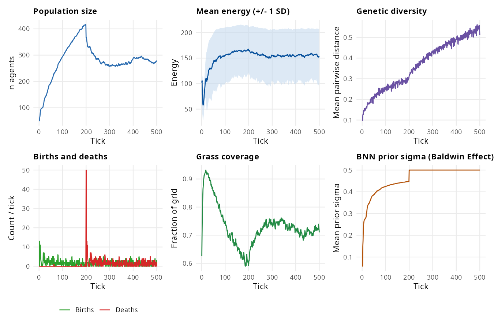
Expected output: prey (blue), predator (red), and infected-agent (orange) time series show interacting waves. Disease suppresses prey density, which in turn reduces predator abundance, while niche construction and social learning modulate recovery rates.
Part VIII — alifeR experiment reference guide
clade is the direct successor to the alifeR
R package, which used an Rcpp backend for simulation. All biological
modules, parameter names, and experimental designs are preserved: the
sole change required to run any alifeR experiment in clade
is replacing alifeR::run_alife(specs) with
clade::run_alife(specs). The Julia backend provides
approximately 25× faster throughput for populations above 200 agents,
making parameter sweeps and replicated batch experiments tractable.
Key translated experiments.
| alifeR script | clade equivalent | Key parameters |
|---|---|---|
grand_experiment.R |
Module comparison (above) | 14 conditions × batch_alife()
|
kin_selection_experiment.R |
Kin selection section |
kin_selection, kin_altruism_r_min
|
niche_experiment.R |
Niche construction section |
niche_construction,
shelter_build_prob
|
body_size_experiment.R |
Body size + predation |
body_size_evolution, n_predators_init
|
mimicry_experiment.R |
Mimicry and toxicity section |
mimicry, toxicity_init_mean,
n_predators_init
|
social_learning_experiment.R |
Social learning section |
social_learning, social_learning_freq
|
rl_experiment.R |
Within-lifetime RL section |
rl_mode, learning_rate,
rl_update_freq
|
Migration checklist. Replace the package namespace
in all calls (alifeR:: → clade::). Confirm
that default_specs() returns the same parameter names as
the alifeR version being migrated; any alifeR parameters introduced
after the clade fork will need manual addition via the
default_specs() extension pattern documented in
?default_specs. No changes to downstream analysis functions
(estimate_heritability(), get_run_data(),
plot_run(), compare_conditions()) are
required.
Part IX — Pure-R scenario: evolution of bad science
What it models. A pure-R simulation (no Julia
required) of Smaldino & McElreath (2016). Labs compete for
citations. Publication probability depends on finding a positive result.
Low statistical power (low effort) increases false-positive
rate (FPR). Under publication pressure, low-effort strategies spread
because they produce more positive results per unit cost. Replication
slows but does not stop the deterioration.
# No Julia required — runs entirely in R
df_norep <- run_bad_science(n_ticks = 500L, replication_rate = 0.0, seed = 1L)
df_rep <- run_bad_science(n_ticks = 500L, replication_rate = 0.5, seed = 1L)
library(ggplot2)
df <- rbind(
cbind(df_norep, rate = "No replication"),
cbind(df_rep, rate = "50% replication")
)
ggplot(df, aes(t, mean_fpr, colour = rate)) +
geom_line() +
labs(title = "False-positive rate under publication pressure",
x = "Tick", y = "Mean FPR", colour = NULL) +
theme_minimal()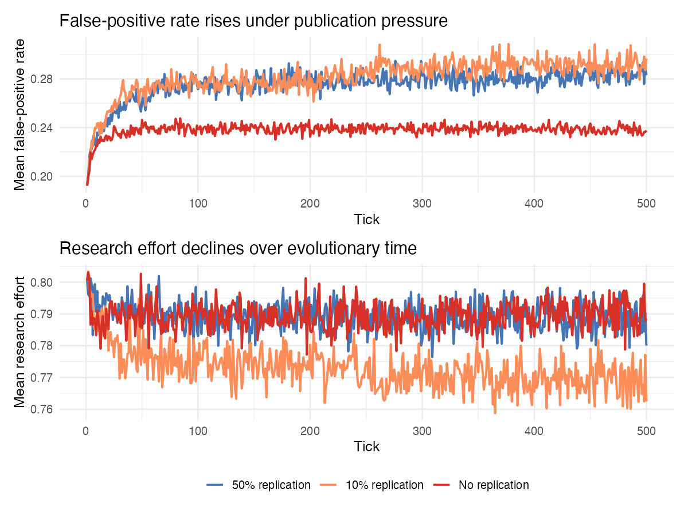
Expected output: false-positive rate rises under publication pressure without replication (red). Replication (blue) slows but does not prevent deterioration.
References
Baldwin, J.M. (1896) A new factor in evolution. American Naturalist 30(354): 441–451.
Boyce, M.S. (1979) Seasonality and patterns of natural selection for life histories. American Naturalist 114(4): 569–583.
Cole, L.C. (1954) The population consequences of life history phenomena. Quarterly Review of Biology 29(2): 103–137.
Coyne, J.A. & Orr, H.A. (2004) Speciation. Sinauer Associates, Sunderland, MA.
DeVault, T.L., Rhodes, O.E. & Shivik, J.A. (2003) Scavenging by vertebrates: behavioral, ecological, and evolutionary perspectives on an important energy transfer pathway in terrestrial ecosystems. Oikos 102(2): 225–234.
DeWitt, T.J. & Scheiner, S.M. (2004) Phenotypic Plasticity: Functional and Conceptual Approaches. Oxford University Press.
Dieckmann, U. & Doebeli, M. (1999) On the origin of species by sympatric speciation. Nature 400(6742): 354–357.
Falconer, D.S. & Mackay, T.F.C. (1996) Introduction to Quantitative Genetics, 4th edn. Longman, Harlow.
Fisher, R.A. (1930) The Genetical Theory of Natural Selection. Oxford University Press.
Fretwell, S.D. & Lucas, H.L. (1970) On territorial behaviour and other factors influencing habitat distribution in birds. Acta Biotheoretica 19(1): 16–36.
Fromhage, L. & Jennions, M.D. (2019) The evolution of mutualism from reciprocal altruism by a selection regime shift. Nature Communications 10: 1294.
Hamilton, W.D. (1964) The genetical evolution of social behaviour I & II. Journal of Theoretical Biology 7(1): 1–52.
Hamilton, W.D. (1971) Geometry for the selfish herd. Journal of Theoretical Biology 31(2): 295–311.
Hauert, C., De Monte, S., Hofbauer, J. & Sigmund, K. (2002) Volunteering as Red Queen mechanism for cooperation in public goods games. Science 296(5570): 1129–1132.
Henrich, J. & McElreath, R. (2003) The evolution of cultural evolution. Evolutionary Anthropology 12(3): 123–135.
Hinton, G.E. & Nowlan, S.J. (1987) How learning can guide evolution. Complex Systems 1(3): 495–502.
Houston, A.I. & Davies, N.B. (1985) The evolution of cooperation and life history in the dunnock, Prunella modularis. In: Sibley, R.M. & Smith, R.H. (eds.) Behavioural Ecology. Blackwell, Oxford, pp. 471–487.
Lack, D. (1947) The significance of clutch-size. Ibis 89(2): 302–352.
Liedtke, J. & Fromhage, L. (2019) The evolution of learning in the cephalopod paradox. Proceedings of the Royal Society B 286: 20190918.
Lotka, A.J. (1925) Elements of Physical Biology. Williams & Wilkins, Baltimore.
Lynch, M. & Walsh, B. (1998) Genetics and Analysis of Quantitative Traits. Sinauer Associates, Sunderland, MA.
Mayley, G. (1996) Landscapes, learning costs and genetic assimilation. Evolutionary Computation 4(3): 213–234.
Maynard Smith, J. (1978) The Evolution of Sex. Cambridge University Press.
McKenzie, G.J. & Rosenberg, S.M. (2001) Adaptive mutations, mutator DNA polymerases and genetic change: strategies of survival for the long-term starving cell. Current Opinion in Microbiology 4(5): 586–594.
Nowak, M.A. & May, R.M. (1992) Evolutionary games and spatial chaos. Nature 359(6398): 826–829.
Odling-Smee, F.J., Laland, K.N. & Feldman, M.W. (2003) Niche Construction: The Neglected Process in Evolution. Princeton University Press.
Réale, D., Garant, D., Humphries, M.M., Bergeron, P., Careau, V. & Montiglio, P.-O. (2010) Personality and the emergence of the pace-of-life syndrome concept at the population level. Philosophical Transactions of the Royal Society B 365(1560): 4051–4063.
Roff, D.A. (1992) The Evolution of Life Histories. Chapman & Hall, New York.
Ruxton, G.D., Sherratt, T.N. & Speed, M.P. (2004) Avoiding Attack: The Evolutionary Ecology of Crypsis, Warning Signals and Mimicry. Oxford University Press.
Shine, R., Brown, G.P. & Phillips, B.L. (2011) An evolutionary process that assembles phenotypes through space rather than through time. Proceedings of the National Academy of Sciences 108(14): 5708–5711.
Smaldino, P.E. & McElreath, R. (2016) The natural selection of bad science. Royal Society Open Science 3: 160384.
Smith, C.C. & Fretwell, S.D. (1974) The optimal balance between size and number of offspring. American Naturalist 108(962): 499–506.
Stearns, S.C. (1992) The Evolution of Life Histories. Oxford University Press.
Trivers, R.L. (1972) Parental investment and sexual selection. In: Campbell, B. (ed.) Sexual Selection and the Descent of Man 1871–1971. Aldine, Chicago, pp. 136–179.
Volterra, V. (1928) Variations and fluctuations of the number of individuals in animal species living together. Journal of the Council International pour l’Exploration de la Mer 3(1): 3–51.
Williams, G.C. (1975) Sex and Evolution. Princeton University Press.
Zahavi, A. (1975) Mate selection — a selection for a handicap. Journal of Theoretical Biology 53(1): 205–214.